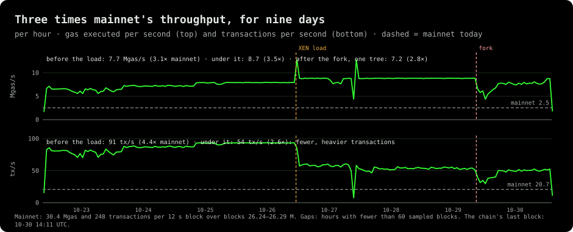
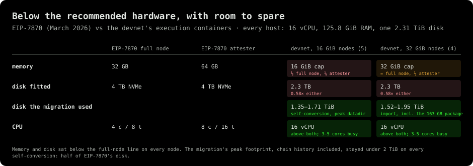
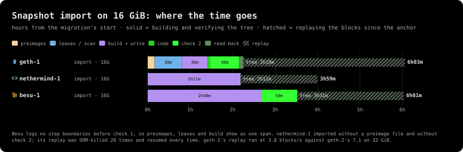
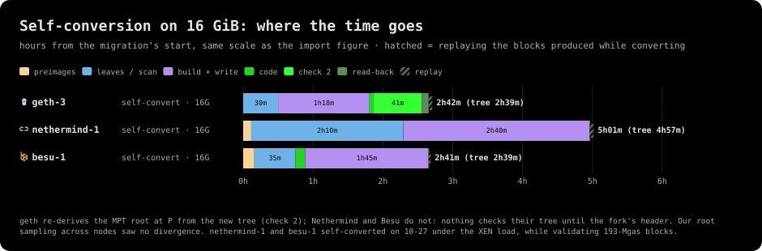
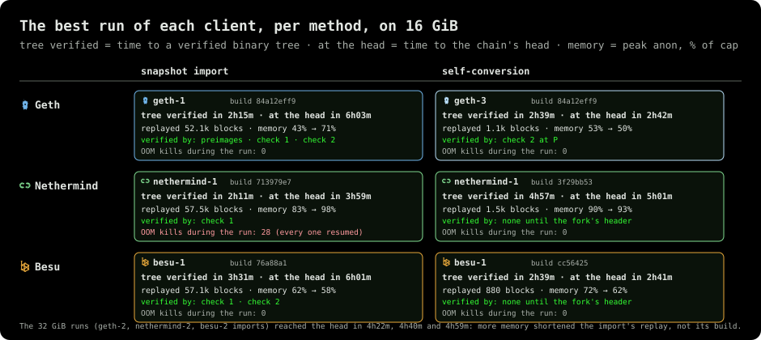
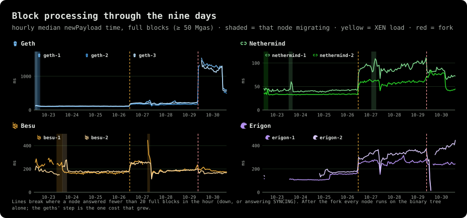
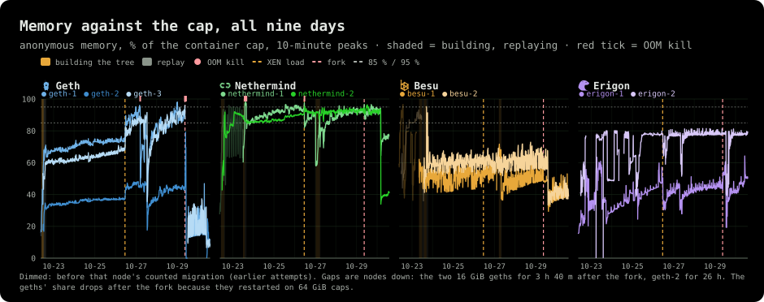
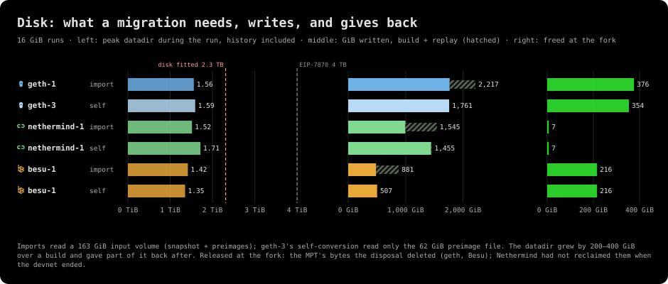
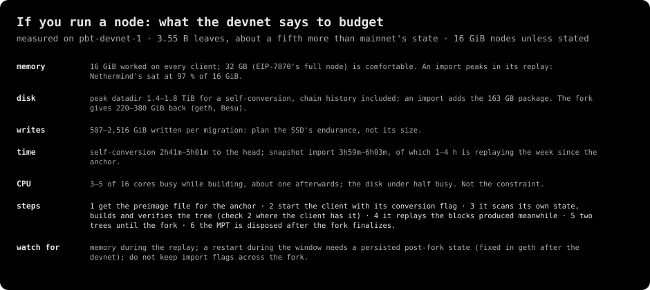

![Figure 1: the scoreboard. One row per best 16 GiB run — geth-1 and geth-3, nethermind-1 twice, besu-1 twice — plus the two erigon nodes with their dual commitment: method, time to a verified binary tree, time to the chain's head, blocks replayed, peak anonymous memory as a share of the cap while building and while replaying, the sampled heights at which we compared the node's binary root with the others', and the fork: every node crossed on the common root, and geth and Besu got 216–376 GiB back when the MPT was disposed of. 1,478 heights, 34,391 pairwise root comparisons, zero divergences. Red marks memory within 10 % of the cap.](figures/f1-scoreboard.svg)
EIP-8347 moves Ethereum's state from the hexary Merkle-Patricia trie (MPT) to the binary tree of EIP-8297 without stopping the chain: a node builds the binary tree next to its MPT, keeps both until a fork block, and switches. pbt-devnet-1, run by ethPandaOps on mainnet's state bloated to 3.55 billion leaves, was the first time nine nodes did this together. The chain ran from 2026-10-22 to 10-30, crossed the fork on 10-29 at 09:00 UTC, and never noticed. This is what the data says.
> What happened
![Diagram 1: the life of a migrating node. Build the tree (2h39m–4h57m for a self-conversion, 2h11m–3h31m for an import, 3.55 B leaves, validating all along), verify it (check 1 against the header, check 2 re-deriving the MPT root in 40–50 minutes; a Nethermind or Besu self-conversion has no check until the fork's header), replay the gap (two to three minutes for a self-conversion, 1h48m–3h48m for an import's 52–58 k blocks), follow with two trees for days, cross the fork on one root, keep both trees for the 19 minutes until the fork finalizes, dispose of the MPT.](figures/d1-lifecycle.svg)
Every geth, Nethermind and Besu node went through the same seven steps: it built the binary tree from 3.55 billion leaves while it kept validating; verified it; replayed the blocks produced meanwhile from their access lists; followed the chain for days with both trees; crossed the fork at block 24,551,102 on a root all nine shared; kept both trees for the nineteen minutes until the fork finalized; and deleted the MPT.
![Figure 2: what each node did, from the first block to the last. Solid bars are the build and verification, hatched tails the replay, the thin line the node following with both trees, green the single binary tree after the fork, red the hours a node was not validating. geth and Nethermind migrated on day one, Besu on 10-23; nethermind-1 and besu-1 did it a second time on 10-27, self-converting under the XEN load; the erigons attached their binary commitment on 10-25. The red after the fork: the two 16 GiB geths for 3h40m, geth-2 for 26 hours, the erigons stalled for an hour.](figures/f2-timeline.svg)
Six nodes imported a snapshot of the state, three converted their own; erigon's two nodes did neither, carrying a binary commitment next to their hexary one by design; they appear wherever the network is measured. nethermind-1 and besu-1 did it twice, an import on day one and a self-conversion on 10-27 under the heaviest load of the week, hence their two rows in the scoreboard.
> A load mainnet cannot produce
![Figure 3: three loads, each heavier than mainnet. Per-block means of gas, transactions, distinct storage slots written and contracts created, for mainnet today, the devnet before the XEN load, the XEN load's full blocks and the synthetic window the imports replayed. Before the load the devnet ran mainnet-shaped traffic at 3.2× the gas; under it, 193-Mgas blocks with 2.3× mainnet's storage writes and 18× its contract creations, every other block near-empty — a shape EIP-1559 does not allow on mainnet. The replay window's blocks wrote 6.6× mainnet's slots each.](figures/f3-load-vs-mainnet.svg)
The traffic came in three shapes, none of which exists on mainnet. For the first four days the blocks carried mainnet-shaped transactions at three times mainnet's gas: 96 Mgas and 1,155 transactions per block against mainnet's 30 Mgas and 249. From 10-26 the load generator, spamoor, switched to the XEN pattern: 193-Mgas blocks, each writing about 2,000 distinct storage slots and creating 222 contracts, nearly every other block left near-empty. Mainnet cannot do this: EIP-1559's base fee would price full-then-empty blocks out within minutes; here the gas limit was 200 M and the fee did not matter. The third shape was never on the live chain: the 50,400 synthetic blocks produced before the devnet opened, 5,534 storage writes each, which every snapshot import had to replay to reach the head.

Sustained, that is 7.7 million gas per second before the load, 8.7 under it and 7.2 after the fork: 3.1 to 3.5 times what mainnet executes, for nine days, through the migrations and a fork. Every migration time in this article was measured on a node validating this.
> Half the recommended hardware

EIP-7870 tells a full-node operator to buy 32 GB of memory and a 4 TB NVMe, and an attester 64 GB. Five of the devnet's execution containers were capped at 16 GiB, four at 32, and every host had a 2.3 TB disk. The migration never came close to the disk: the datadir peaked at 1.35–1.71 TiB during a self-conversion, chain history included, and at 1.52–1.95 TiB for an import with its snapshot package. CPU was never the constraint either: three to five of sixteen cores while building, about one afterwards. Memory ran short, and only on the 16 GiB nodes.
The expectations going in were slower and bigger. Before the speed-up rounds geth's offline conversion of a mainnet-sized state was projected at about 17 hours with four workers, and its snapshot import measured 2h43m on an idle benchmark box; by the time the devnet opened the box imported in 1h19m–1h27m. On the devnet, a geth node capped at 16 GiB and validating three times mainnet's load built and verified its imported tree in 2h15m: 1.7× the idle box, not the multiple the hardware gap suggests. Self-conversion had never been benchmarked before the devnet. It turned out to be the fastest way to the head.
> Two ways to build the tree
![Diagram 2: the two methods as data flows. A snapshot import consumes a 163 GB snapshot-plus-preimages package produced elsewhere, verifies the preimages and the tree against block N's header (check 1, check 2), writes the tree and replays every block since N: 52–58 thousand here. A self-conversion scans the node's own flat state at a block P of its choosing, builds the tree with the preimage file and the keys from the access lists since N, and replays only the blocks produced while it converted: 880 to 1,479. geth re-derives the MPT root at P; Nethermind and Besu run no check on a self-converted tree until the fork's header carries the binary root. Our root sampling across nodes saw no divergence.](figures/d2-two-methods.svg)
The import is the method the EIP describes: a snapshot of the state at a finalized block N and its preimages, shipped as a package, checked against N's header, written as a tree, then brought to the head by replaying every block since N. The self-conversion keeps only the preimage file: the node reads its own flat state at a block P it picks, builds the tree, verifies it where the client can, and replays the blocks produced while it was busy.
> Snapshot import: where the time goes

On 16 GiB, Nethermind and geth had a verified tree from the package in 2h11m and 2h15m, Besu in 3h31m. Then came the tax: 52–58 thousand blocks between the anchor and the head, 1h48m to 3h48m of replay, so the head arrived after 3h59m (Nethermind), 6h01m (Besu) and 6h03m (geth). The replay is also where memory peaked: nethermind-1 was OOM-killed 28 times during it, resumed every time, and still reached the head in under four hours.
The import's cost is everything around the build: someone has to produce and host the 163 GB package, every operator has to download and verify it, the anchor has to be final, and the replay grows with every block since. The results make the import path likely to go away. With a self-conversion this fast there is nothing left to produce, distribute, verify or consume, no anchor to wait on, and less to specify, implement and operate.
> Self-conversion: an afternoon

geth-3 and besu-1 converted their own state in 2h39m and were at the head in 2h42m and 2h41m; their replays covered 880 to 1,479 blocks and took two to three minutes. nethermind-1 needed 4h57m: its scan of its own state is 2.3× slower than its import stream today. besu-1 and nethermind-1 converted under the XEN load, validating 193-Mgas blocks throughout; besu-1 still beat its own import by almost an hour.
Verification differs by client. geth re-derives the MPT root at P from the new tree, a 40–50 minute check 2 that proves the tree holds exactly the state the header commits to. Nethermind and Besu run no check; nothing tells them the tree is right until the fork block's header carries a binary root. We compared the nodes' binary roots at sampled heights, the three self-converted trees included: 1,478 heights, 34,391 pairwise comparisons, zero divergences.
My read: self-conversion is not just the default; it is likely the only path worth keeping. Simpler for the spec (no snapshot format, no package, no anchor), for the clients (one code path, the preimage file as the only input) and for operators (start the client with a flag, come back after lunch). Check 2 should come with it on every client.
> The best run of each client, per method

Six runs, three clients by two methods. Self-conversion wins on time to the head for geth (2h42m vs 6h03m) and Besu (2h41m vs 6h01m) and loses for Nethermind (5h01m vs 3h59m), where a fast replay compensates a slow scan. The 32 GiB imports (geth-2, nethermind-2, besu-2) reached the head in 4h22m, 4h40m and 4h59m: more memory shortened the replay, not the build.
> Performance while migrating, and the replay
![Figure 9: block processing per unit of work, state by state. Median engine_newPayload time per MGas on full blocks (≥ 50 Mgas) for each node on one tree, while migrating, while replaying, with two trees before and under the load, and on the binary tree alone after the fork; at right, the median time per block from two trees under the load to binary only. While migrating, the live node slows by 6–40 %; two trees at the head cost erigon 24–46 % per MGas over its single-tree week. After the fork Nethermind, Besu and erigon-1 process a block as fast as before or faster (0.7–1.0×); geth takes 2.8–3.1× longer per block on its binary tree today.](figures/f9-processing-by-state.svg)
A node building its tree is still a validator, and the chain feels it a little: block processing per unit of gas was 6–40 % slower while migrating than at the head with two trees, the most on Besu, the least on Nethermind. Nobody missed a slot for it.
![Figure 10: how fast the BAL replay catches up, per run. Left: blocks replayed per second on live blocks (bright) and on the synthetic window (dim). Right: how long a day of mainnet — 7,200 blocks of ~833 storage writes, comparable to the devnet's live blocks — would take at the live rate: 4–5 minutes for Nethermind's and Besu's imports, 12–19 minutes for geth and for the self-conversions. Scaled by storage writes, the imports' replay of the 5 k-write synthetic blocks would cover a mainnet day in 1–5 minutes.](figures/f10-replay-rate.svg)
The replay is the part of the design that scales with time, so its rate matters more than its length here. From the access lists, nethermind-1's and Besu's imports replayed 26–33 live blocks per second, geth and nethermind-2 6–10, the self-conversions 7–9: a day of mainnet in four to nineteen minutes. The synthetic window, with six times mainnet's writes per block, went slower per block and faster per write.
![Figure 11: snapshot import or self-conversion, per client, on 16 GiB. Top: the measured runs, build solid and replay hatched. Bottom: the modelled time to the head on mainnet as a function of the snapshot's age, with the replay at each client's live-block rate; the dashed line is the self-conversion, which does not grow with anything. The breakeven is 1.2 days for geth; for Besu the self-conversion wins at any age; for Nethermind the import stays ahead until the snapshot is about a month old, because its self-conversion is slow today and its replay is fast.](figures/f11-import-vs-self.svg)
Put together, the import only wins while the snapshot is fresh: for geth it loses once the snapshot is 1.2 days old, for Besu it never wins, and for Nethermind it holds for about a month only because its self-conversion is the slow one today.
> Two trees at the head

Between its migration and the fork every node maintained two trees on every block, for one to seven days. The cost was fixed and small: erigon, the one client with a clean single-tree baseline, paid 24–46 % more per unit of gas with both commitments; on geth, Nethermind and Besu the switch does not show in the hourly series, while the XEN load does, on every client. Memory: about 3 GiB of RocksDB index and filter blocks for Nethermind's second tree, about a gibibyte of caches for geth's.
> The fork
![Figure 13: crossing binaryTrieTime. Two-minute medians of engine_newPayload per node from two hours before the fork to six hours after; gaps are nodes down. Below: the first ten post-fork blocks, VALID answers only. Nethermind took 47–50 ms for them, Besu 102–108, erigon 132–169, geth 716–1,135 ms with a worst block of 2 s; no node that stayed up answered anything but VALID in the first hour. The two 16 GiB geths vanish from the chart four minutes in (OOM) and come back three and a half hours later.](figures/f13-fork-crossing.svg)
At 09:00 UTC on 10-29 block 24,551,102 carried a binary root, and all nine nodes agreed on it: 100 % participation at the boundary, no missed slot. The first post-fork blocks took Nethermind 47–50 ms, Besu about 100, erigon 130–170 and geth 0.7–1.1 s. Nineteen minutes later the fork was final, the window in which a reorg could have crossed back closed, and the MPT became disposable. Four minutes in, the two 16 GiB geths were OOM-killed; that story is in the next section. Nothing else happened to the chain.
![Figure 14: after the fork, one tree instead of two, per node. Left: disk released by the MPT's disposal — 354–376 GiB on geth, 216–222 on Besu, 7–9 on Nethermind and 2–3 on erigon, which keep the old tree's bytes (erigon by design, Nethermind not yet reclaimed when the devnet ended). Middle: anonymous memory 24 hours before and after (the geths restarted on 64 GiB caps). Right: median time per full block with two trees under the load and on the binary tree alone, on the fixed builds: Nethermind 0.7×, Besu 0.9–1.0×, erigon 0.9–1.2×, geth 2.6–3.1×.](figures/f14-after-the-fork.svg)
The disposal gave back 354–376 GiB per geth node and 216–222 per Besu node; Nethermind's 7–9 GiB and erigon's 2–3 mean the old tree's bytes were still on disk when the devnet ended, by design on erigon, not yet reclaimed on Nethermind. Memory fell by a tree's worth, 1–5 GiB per node.
And the plain statement: on the binary tree alone, Nethermind processes a full block in 0.7× the time it took with two trees under the load, Besu in 0.9–1.0×, erigon in 0.9–1.2×, and geth in 2.6–3.1×, 516–612 ms where it took 167–218. That is geth's binary-tree code path today, measured on its fixed builds over the chain's last hours, not the design: the same tree costs Nethermind less than its MPT did. It is the clearest piece of client work the devnet left behind.
> What broke, and what fixed it
![Figure 15: what broke, when, and what fixed it. Per node, every failure on the nine days' timeline — OOM kills, JVM heap exhaustions, SIGSEGVs, replay stalls, crash-loop restarts — with the time until the node answered VALID again as a bar and the fix as a green marker: Besu's batched BAL catch-up on day one, new erigon builds, Nethermind's memory-budget build, geth's profiler-leak fix (#78), and the post-fork geth fixes (#79 to #85, 30 hours). Day one is the clients' first contact with the devnet; from 10-24 to the fork nothing failed but one geth OOM traced to the profiler.](figures/f15-failures.svg)
Four clients met a mainnet-sized migration at three times mainnet's load for the first time; things broke. None of it was the migration: no wrong root, no lost state, no replay that could not resume. What broke was the plumbing around it, and every piece was fixed during the devnet.
- geth, fork day. Four minutes after the fork, geth-1 and geth-3 (16 GiB) were OOM-killed. The memory was not the binary tree's: the follower's state-access path re-read two flags from the database on every access, each read dragging a 256 MiB buffer past the tree journal in the same database; under 193-Mgas blocks that stacked 5–17 GiB of native memory outside the Go heap (#80, #81). Restarting exposed the second defect: killed before the binary tree's first post-fork flush, a node had no persisted post-fork state and the stock recovery rewound toward genesis. #79 refused the rewind and brought both back in 3h36m–3h39m; #82 checkpoints the frozen MPT at the fork, #83 picks the start-up route from the state on disk, #85 hands the disposed node its follower's handle. geth-2, whose MPT was already gone when it died, came back through #83's last route, a BAL replay from its deepest surviving record to the head: 25h34m after it went down, 1h17m after the fixed build started.
- Nethermind, memory. nethermind-1 was OOM-killed 38 times on its 16 GiB cap, 28 of them during its import's replay, which resumed each time and still finished in 1h49m. The Nethermind team's memory-budget build (
f609f2fd, 10-27) took the node from 95 % to 66 % of the cap; no kill after it. - Besu, the replay. Besu's first import replayed one block at a time, 0.8–1 per second, 16 hours for the week since the anchor. The Besu team's batched catch-up (
76a88a11, 10-22) rolled 128 blocks at a time at 8.5 per second, root-identical to geth at every batch end, and cut the replay to two hours. Two JVM heap exhaustions in besu-1's day-one backward sync, on an 8 GB heap, preceded it. - geth, 10-27. geth-1 was OOM-killed once at steady state: a leak in the heap profiler under the binary tree's recursion (#78). Observability, not the tree; geth-3 went from 14.6 to 4.5 GiB after the fix.
- erigon. Three SIGSEGVs on day one, fixed by new builds the same evening, and a commitment stall at block 24,551,730 on fork day that held both nodes an hour, fixed by a new build on 10-30.
> What a node needs: memory and disk
![Figure 16: what the machines did, state by state. For each node and state — building, replaying, two trees before and under the load, binary only — busy cores of the 16, share of time the disk was busy, share of time a task waited on IO, and the 95th percentile of anonymous memory as a share of the cap, with the ten minutes around each OOM kill excluded. Building kept 3–5 cores busy with the disk busy 10–53 % of the time; at the head a node used about one core. Memory was the only resource that ran short, and only on the 16 GiB nodes.](figures/f16-machines-by-state.svg)

16 GiB worked on every client; 32 GB is comfortable; the goal should be to guarantee 16. An import peaks in its replay, not its build: nethermind-1 touched 98 % of its cap replaying, besu-2 95 % of 32 GiB, geth-1 71 %. A self-conversion peaks while building: 53 % on geth-3, 72 % on besu-1, 90 % on nethermind-1. Part of what the 16 GiB nodes spent went to observability, geth's profiler leak being the clearest case, and fixes moved the needle more than hardware would have: Nethermind from 95 % to 66 % with one build.


Disk is a question of writes, not of size. A migration wrote 0.5–2.5 TiB to the SSD, most of it during the build; the datadir grew by 200–400 GiB and gave part of it back when the build finished, then 216–376 GiB more at the fork on geth and Besu. Nothing came within 600 GiB of the 2.3 TB disk; EIP-7870's 4 TB is more than twice what the biggest run touched.
> The network never noticed, except once
![Figure 20: the network, hour by hour. Top: participation and the number of nodes validating; middle: the finality distance in epochs, red where above the normal two, with missed slots per hour in grey; bottom: the share of each hour's blocks every node answered VALID. 4.5 k of 59.2 k slots were missed over the nine days, 99 % of them in hours when at least one node was not validating (correlation with the number of nodes down 0.98) and 59 with all nine up. No reorg was seen by more than two of the nine sentries. Finality paused once, for 58 minutes on fork day, when five nodes were down at the same time, and resumed as soon as two came back.](figures/f20-network.svg)
Nine validators is a small network, and it shows what a migration does. Of 59,200 slots, 4,497 were missed; 99 % of them fell in hours when a node was not validating, and the hourly count follows the number of nodes down with a correlation of 0.98. With all nine up, 59 slots were missed in nine days. No node saw a reorg that another node confirmed. The migrations, build and replay included, left no trace in any of these series.
Finality paused once. On fork day, between 12:10 and 13:08 UTC, five of the nine validators were out at once: three geths down or recovering, two erigons stalled. Participation fell to 22 %, twelve epochs went unfinalized, and finality resumed the moment geth-1 and geth-3 came back. Nothing finalized was reverted. The other dent, on 10-22 evening, was early builds keeping three nodes out: finality lagged seven epochs with six validating. Both were nodes down, not trees disagreeing.
> What I take from it

- The migration works, live, at scale. Nine nodes, four clients, three methods, 3.55 billion leaves, three times mainnet's load, one root at the fork: zero divergences in 34,391 comparisons.
- Self-conversion is the path, and likely the only one to keep. An afternoon on 16 GiB, the preimage file as the only input, a replay measured in minutes. The import adds a producer, a package, an anchor and a week of replay for no gain once the snapshot is a day old.
- The hardware story beats the recommendation. Half of EIP-7870's memory did it on every client; 32 GB is comfortable; disk is about 2.5 TiB of writes, not size.
- The fork is the easy part. One root, 100 % participation, the window closed in nineteen minutes, a tree's worth of disk and memory returned.
- What is left is client work, not design work. geth's post-fork block cost, Nethermind's self-conversion scan and disk reclaim, check 2 on every client.
Before mainnet, from the evidence here: check 2 on every client, since nothing else verifies a self-converted tree until the fork; dispose of the MPT only after a post-fork binary state is persisted, or a kill in those minutes loses the only way back; geth's binary-tree block cost down to where the other clients already are; Nethermind reclaiming the old tree's bytes; and no import flag surviving the fork in a deployment.
The devnet was ethPandaOps' work, from the bloated state and the nine hosts to the load, the images and the restarts at odd hours; thank you. The geth, Nethermind, Besu and erigon teams shipped fixes into a running network within hours, repeatedly. Every number above comes from the devnet's logs, Prometheus, xatu and RPC, measured the same way on every node.